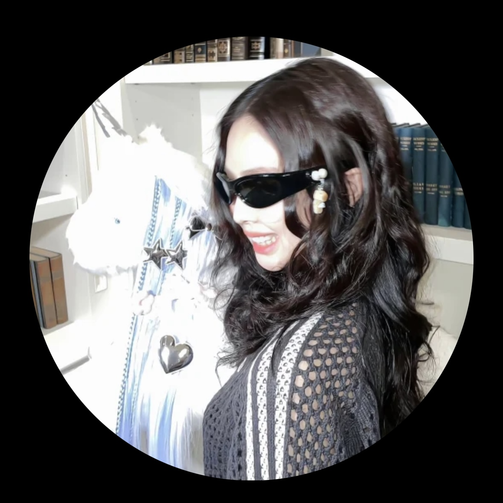
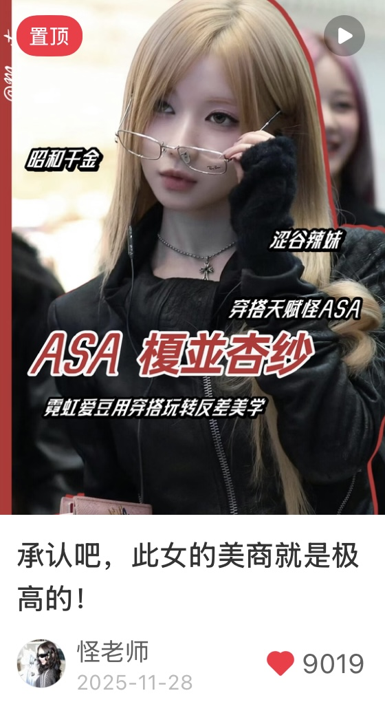

时尚资讯号 @怪老师｜明星穿搭与潮流解析
2025.11 – 2026.05a1.web.mp4
a3.web.mp4

a-avatar.jpg怪老师 · 小红书 · 明星同款 / 潮流解析
粉丝 2.3万（截至 2026.11）
背景
账号原本做图文，2025 年 11 月转做视频，我接手剪辑。
结果对比
图文时期（接手前）
均赞 约 70+
商单 偏少且质量不高
视频时期（我接手后）
均赞 1000+
商单 20+
流量全部来自自然流
我给这个账号剪的第3个单子，点赞就破1000+
点赞变化（接单前4个月VS接单后4个月）
我做了什么
- 剪辑
- 独立剪辑账号日常短视频，累计 40+ 条，其中商单 20+。
- 节奏
- 粉丝喜欢快节奏、能马上拿到信息，所以我用强节奏卡点和高饱和包装，把信息放在最前面。
- 选题
- 参与部分选题讨论，寻找近期热点，把品牌信息放进内容场景里，不单独打广告。
数据变好不全是剪辑的功劳：粉丝基础在涨，选题也跟上了热度。
我能控制的是节奏：我会拆同行的爆款，看他们在哪里卡点、信息怎么排，再按这个账号粉丝爱看的快节奏调整。
爆款案例｜穿搭种草短视频

a-case1.jpg- 数据
- 点赞 9000+｜自然流
- 选题
- 话题度高的人物穿搭（ASA）
- 剪辑
- 选用她的歌作卡点背景音乐，快节奏混剪，让用户几秒内获得穿搭信息